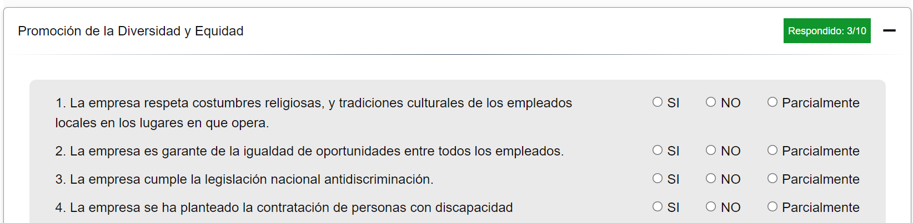
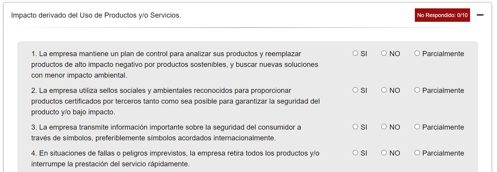
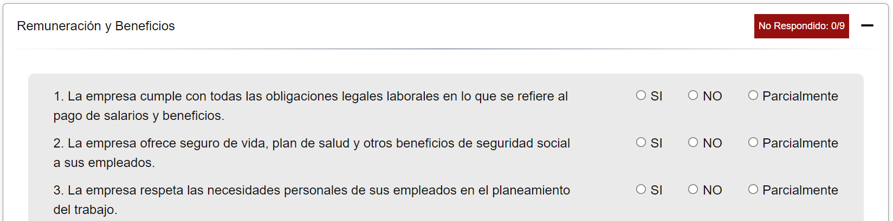
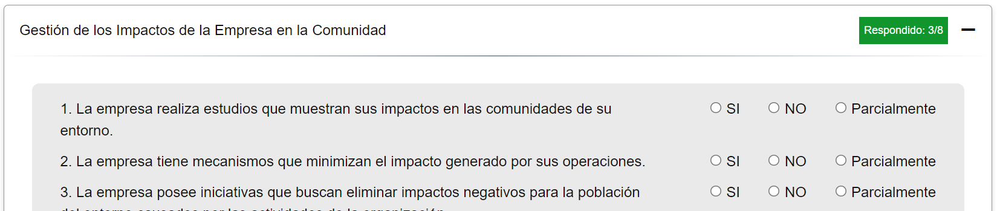
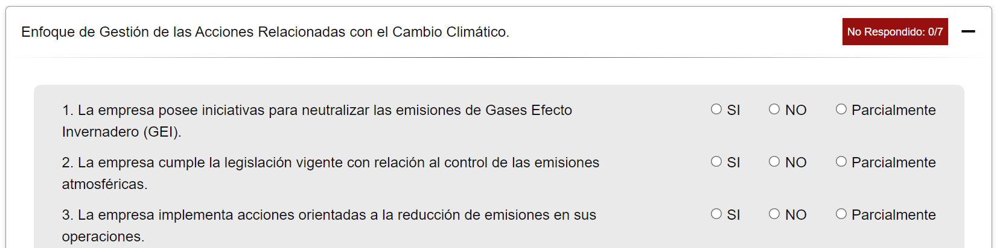

Evalué su nivel de Integración.
Evalué el desempeño de su empresa frente a practicas de RSE. Realizar esta evaluación será un enriquecedor para su empresa.
Que evaluamos.
Dimensiones.
Ambiental
La Responsabilidad Social Ambiental se puede entender como el conjunto de mecanismos aplicados por las empresas, para minimizar su impacto al medio ambiente, contribuyendo así a mejorar la calidad de vida de la empresa y de sus alrededores.
Temas.
Derechos Humanos
Dimensión social.
Cuestiones Relativas al Consumidor
Dimensión social.

Prácticas de Trabajo
Dimensión social.
Relaciones con la Comunidad y su Participación en su Desarrollo
Dimensión social.
Medio Ambiente
Dimensión Ambiental.
Sub-Temas y Preguntas.
Todas las preguntas se encuentran calcificadas por
temas que a la vez están clasificadas por subtemas.
Estas preguntas tendrán 4 tipo de opciones “Si”,
“Parcial”, “No” y “No Aplica”, siendo la “Si” la
opción más optima y “No” la opción menos optima,
mientras que “No Aplica” se refiere a preguntas
que no se tomarán en cuenta al obtener los resultados finales.
-

-

-

-

-

Copyright © 2022. Todos los derechos reservados.